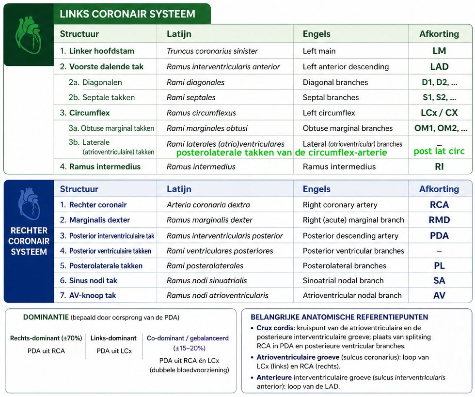
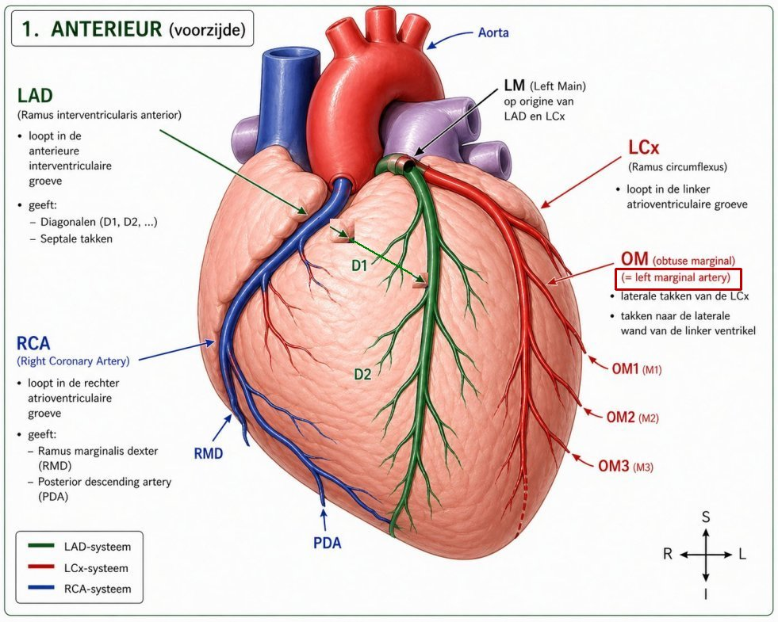
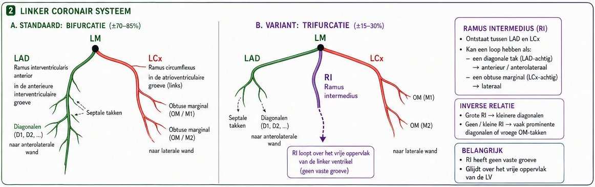
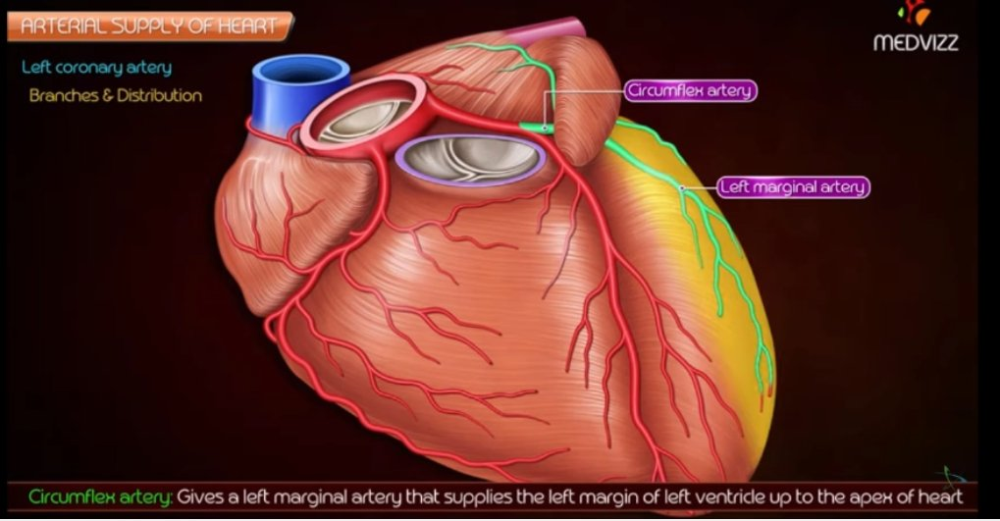
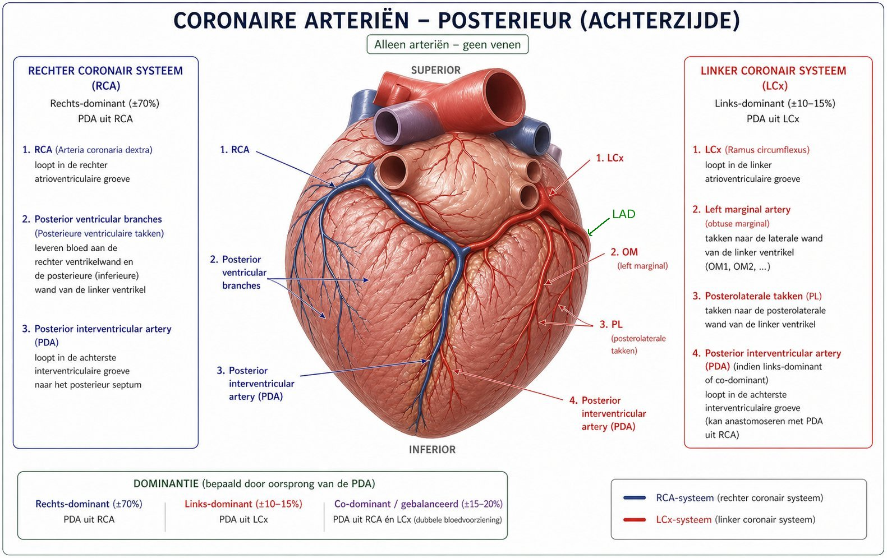
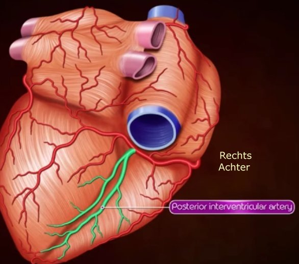
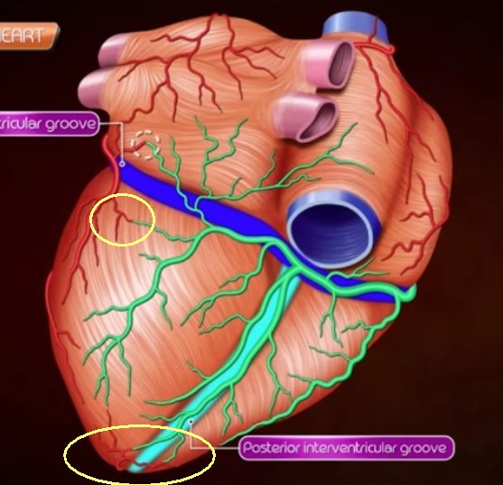
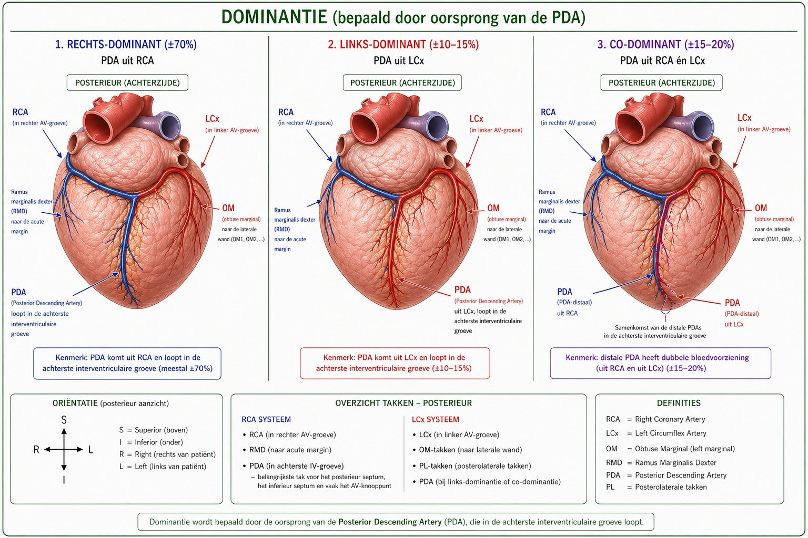
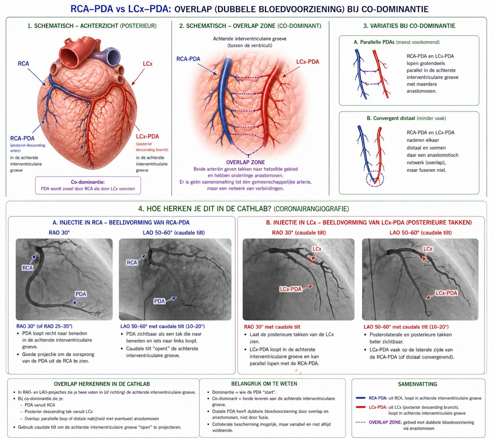
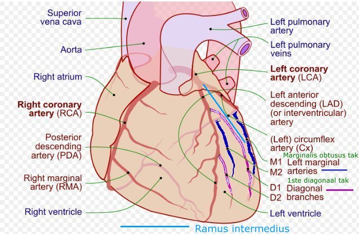

100%

Benaming coronairen

LM → LAD en LCx

LM → trifurcatie

Obtuse marginale takken

Coronaire - posterior (co-dominantie)

Posterior descending (interventriculaire tak)- PDA uit RCA

Posterior ventriculaire takken

Dominantie - PDA ofwel uit RCA ofwel uit LCx

Dominantie - CatLab

Projectie - PDA achterzijde hart & EKG

Projectie - persoonlijk bijgewerkt :-)